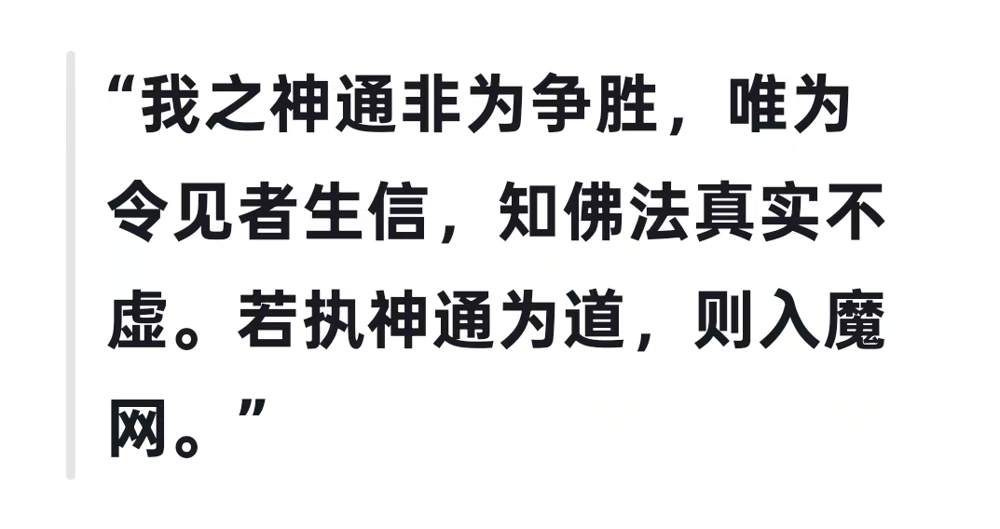

20260801拙火定，也是身体先热起来热起来，不仅化掉疾病，神通异化也必须热起来，超能量发挥
智慧甚微妙，不取诸音声，
觉已无所著，故名为菩萨。
能舍己肉身，终亦无依止，
如是觉真实，乃名为菩萨。
——《大宝积经善住意天子会》[合十][玫瑰]
能舍己肉身，不是要舍弃这个肉体，是了知我不在其中。所以一直提醒，不要抓取这个肉体身为我

密勒日巴
全真派
若菩萨于佛所说弃舍不学，反习外道邪论世俗经典，是名为犯众多犯，是犯染污起。
一一《菩萨地持经》
💜若归佛已，宁舍身命终不依于自在天等；
若归法已，宁舍身命终不依于外道典籍；
若归僧已，宁舍身命终不依于外道邪众。
一一《优婆塞戒经》
@呼和浩特 陈呼和 不是全真派，是密勒日巴尊者说的
华严经提到十神通
我用deepseek搜了一下，举例密勒日巴的神通
飞行跨越珠穆朗玛峰
穿越一座山
等
是藏密
拙火定，也是身体先热起来
热起来，不仅化掉疾病，神通异化也必须热起来，超能量发挥
我小时候，见不到佛经，庙里也没有
九十年代，在一个超市书店里见到一部佛经，标价近三百
99年我上班，一天才发一块钱，买不起
[呲牙][呲牙][呲牙]
00年一天一块六
不过福利好，发衣服，发煤，酒，大米，饭票菜票
写错了，89年上班
九零年一块六
91年改革
我雨法雨，充满世间，
一味之法，随力修行。
如彼丛林，药草诸树，
随其大小，渐增茂好。
诸佛之法，常以一味，
令诸世间，普得具足，
渐次修行，皆得道果。
——妙法莲华经